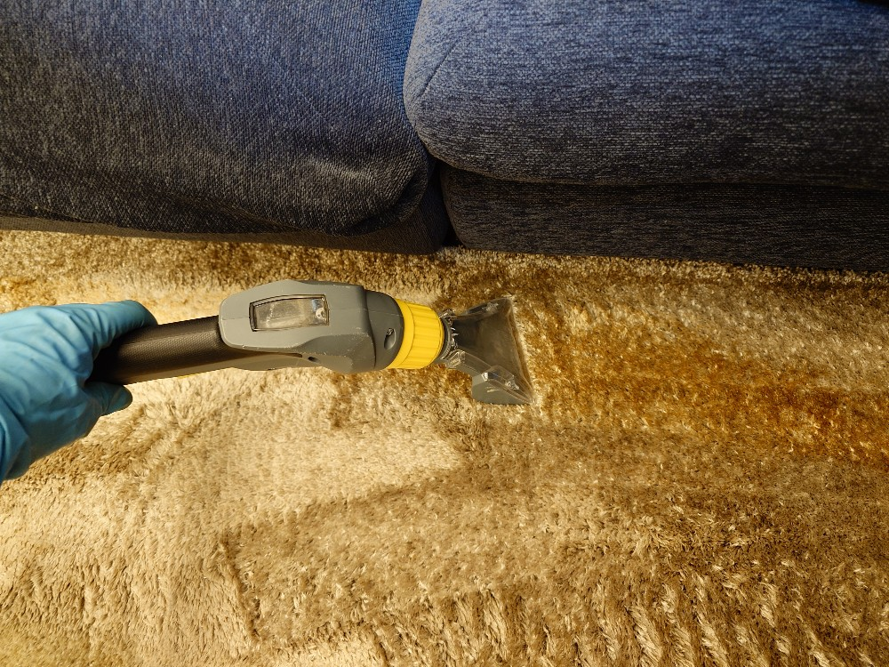
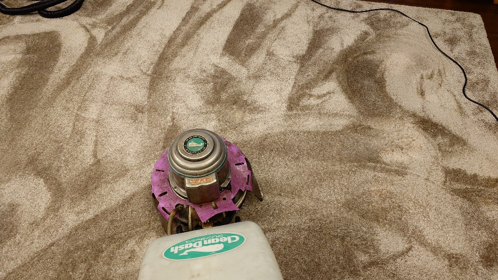
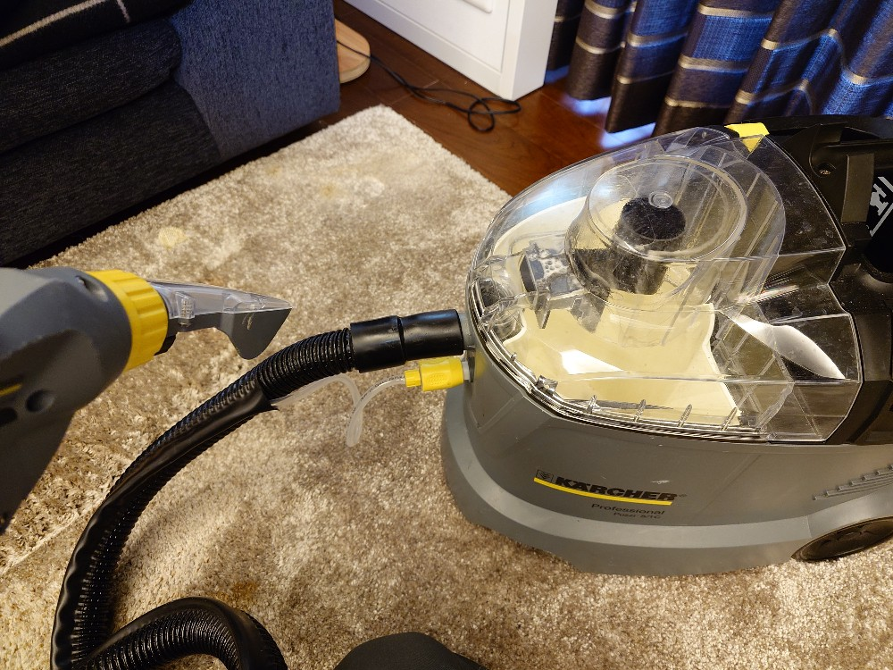
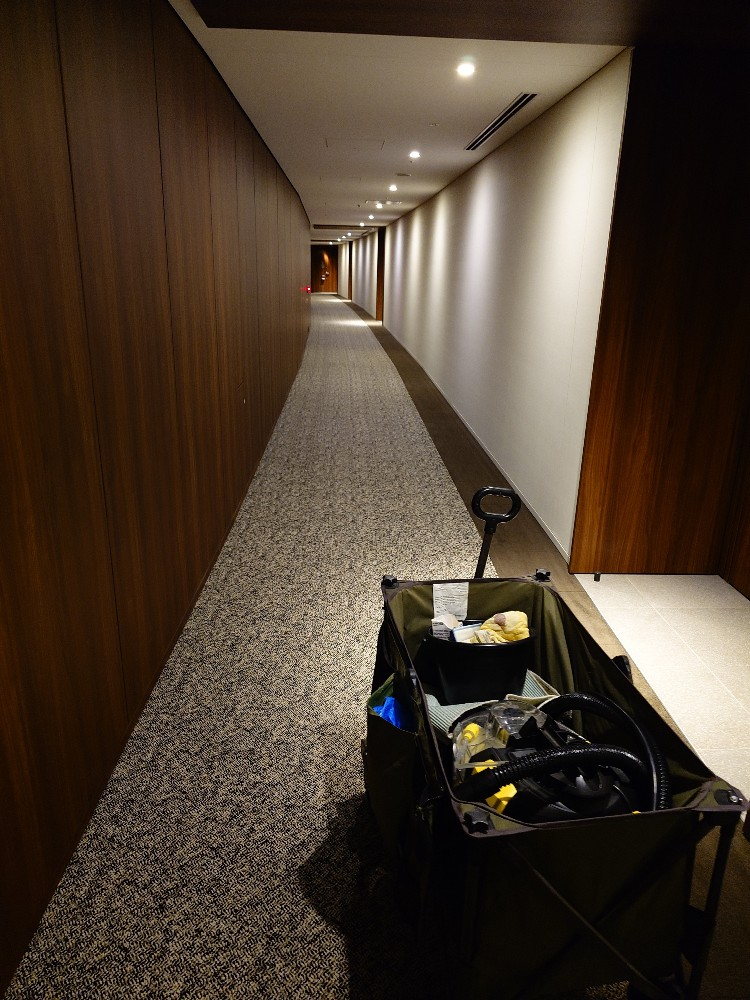

東京都港区虎ノ門ヒルズのK様マンション居室とリビングのカーペットクリーニングをしました。
東京都港区虎ノ門ヒルズのK様マンションのカーペットクリーニングをしました。カーペットに飲み物をこぼされたとのことで、DAIZENプロフェッショナルメソッドを駆使して可能な限り飲み物汚れを除去しました。ドイツ製カーペットリンサー機器と、最新テクノロジーのドイツ製専用薬剤を用いて汚れが除去されて、喜んで頂きました!



